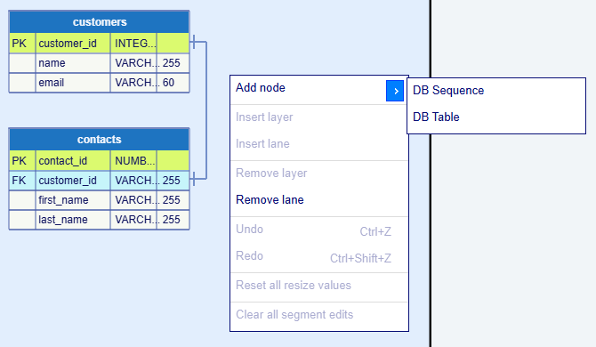
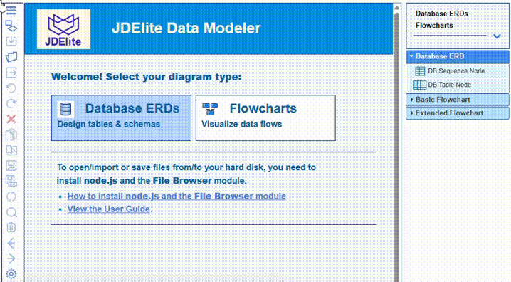
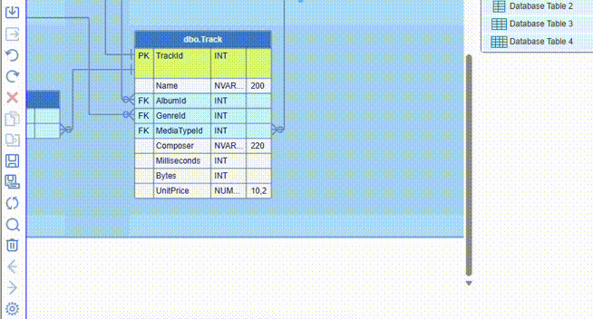
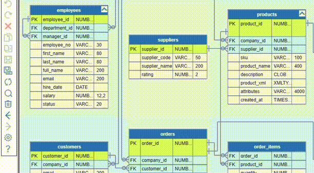

A DB diagram node in ERDs represents a table from the SQL schema. It shows the table structure and the rules as defined in the particular database schema documentation.
A new DB diagram node is created either by dragging an item from the palette on the right to an accepting cell on the canvas, or by selecting an item from the canvas context menu displayed on an empty cell. In both cases there are two node choices: DB Table and DB Sequence:

Once you have the basic DB node visual instance, the next steps are to define its structure. This is done by using the DB table editor dialog. To open it, you double-click on either the title bar or a particular row of the node.
Each row represents a column from the database table and you can enter the corresponding properties.
The fields in a DB node row are common for all supported databases: Key, Column Name, Data Type and Length. The keys are either primary, foreign, or no key. The column names correspond to the database columns. The drop-down list of datatypes is database specific. The length applies to database columns that hold text datatypes.
You can add, edit or remove a row, as well as rearrange the order of the rows, using the buttons at the top right. These buttons are enabled or disabled depending on the row selection. You can also define database table column constraints, LOB storage, and indexes. The editor actions are demonstrated below.
The four standard node row fields are:
Key - designates the database column as either primary(PK or CPK) or foreign (FK or CFK) keys, or none
Column Name - the database column name
Data Type - data type of the content in this column
Length - the length of the data in this column
The buttons on the toolbar of the DB table editor are as follow:
- Add a new empty row
- Add an additional row for the primary key
 - Delete the selected row
if there is no reference to it
- Delete the selected row
if there is no reference to it
- Move the selected row one step up if the row has no primary key assigned
- Move the selected row one step down if the row has no primary key assigned
You can edit the node name inline at any time.
Here is an example how to create a database table node:

And here is an example how to rearrange some rows in a database table node:

Below the fields in the DB table editor are the three main categories of DB table properties:
- Table Constraints / Keys or Column Constraints / Properties, upon your choosing the title bar or a row
- Table LOB Storage or Column LOB Storage, again upon your choosing the title bar or a row
- Indexes - they are both at table level and at row level (database table column)
